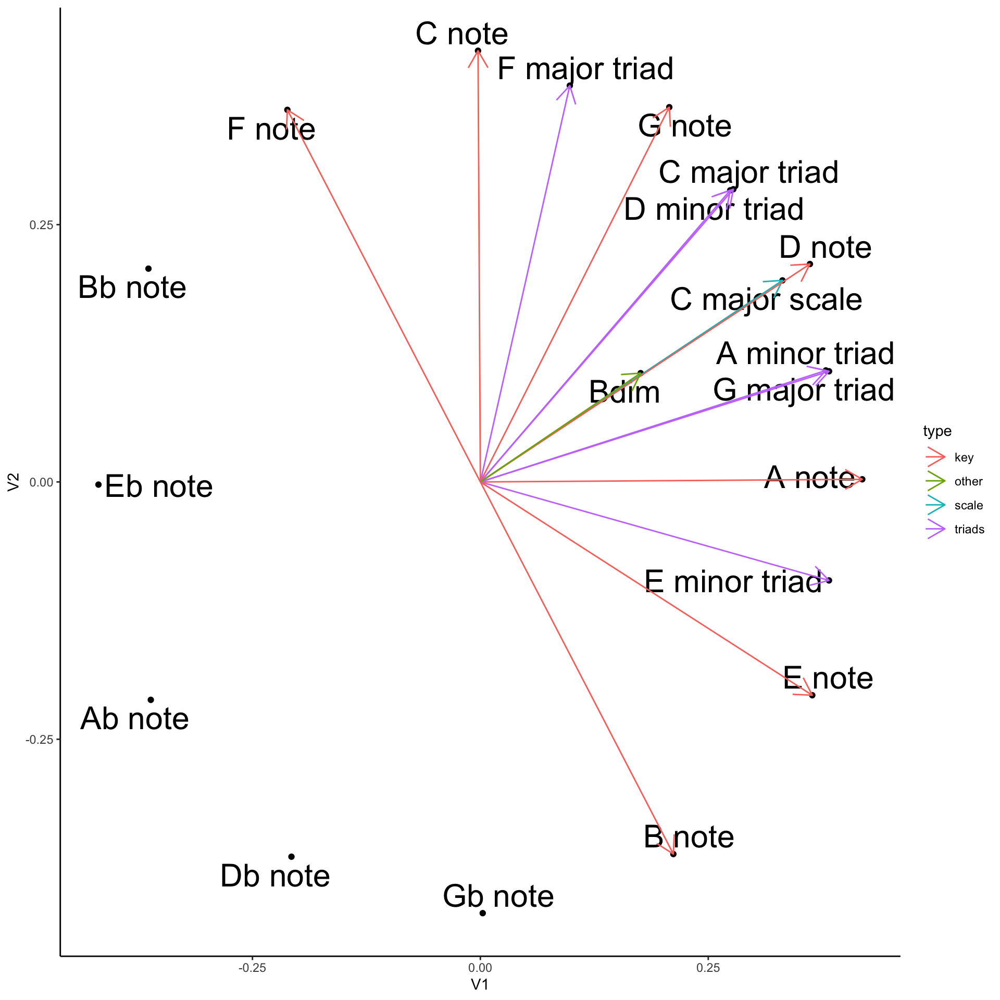
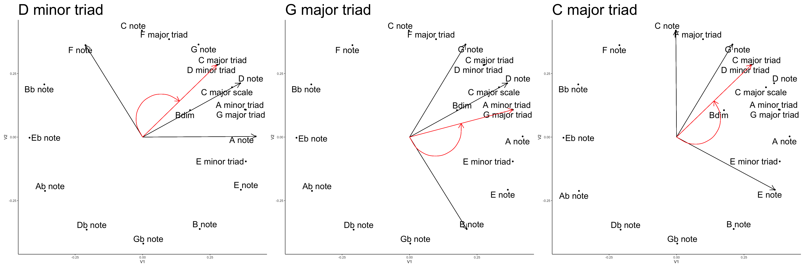

Looking at the C major scale from the geometry of vector space.
Author
Matt Crump
Published
January 29, 2024
Show the code
from diffusers import DiffusionPipelinefrom transformers import set_seedfrom PIL import Imageimport torchimport randomimport sslimport osssl._create_default_https_context = ssl._create_unverified_context#locate library#model_id = "./stable-diffusion-v1-5"model_id ="dreamshaper-xl-turbo"pipeline = DiffusionPipeline.from_pretrained( pretrained_model_name_or_path ="../../../../bigFiles/huggingface/dreamshaper-xl-turbo/")pipeline = pipeline.to("mps")# Recommended if your computer has < 64 GB of RAMpipeline.enable_attention_slicing("max")prompt ="Letter C. Brought to you by the letter C. C. Sesame Street. Muppets."for s inrange(30):for n in [5,10]: seed = s+21 num_steps = n+1 set_seed(seed) image = pipeline(prompt,height =1024,width =1024,num_images_per_prompt =1,num_inference_steps=num_steps) image_name ="images/synth_{}_{}.jpeg" image_save = image.images[0].save(image_name.format(seed,num_steps))
Letter C. Brought to you by the letter C. C. Sesame Street. Muppets. - Dreamshaper v7
I’ve been representing chords as vectors and plotting them in 2-dimensional space to visualize similarity relationships.
Some of the graphs in previous posts are very busy to look at, and it is difficult for me to appreciate what is going on. This post is about interpreting something very familiar, the C major scale, in terms of that similarity space.
In two dimensions, the multi-dimensional scaling algorithm positions notes in terms of the circle of fifths. So, this analysis is similar to what you would get thinking about the C major scale using the circle of fifths. The major difference is the idea of “vectors” that go in a particular direction.
Without further ado, here is a plot of all the notes, all of the notes in the C major scale, and the triad chords from the C major scale.
C major scale components in vector space
Show the code
library(tidyverse)# pre-processing to get the chord vectors# load chord vectorsc_chord_excel <- rio::import("chord_vectors.xlsx")# grab feature vectorsc_chord_matrix <-as.matrix(c_chord_excel[,4:15])# assign row names to the third column containing chord namesrow.names(c_chord_matrix) <- c_chord_excel[,3]# define all keyskeys <-c("C","Db","D","Eb","E","F","Gb","G","Ab","A","Bb","B")# the excel sheet only has chords in C# loop through the keys, permute the matrix to get the chords in the next key# add the permuted matrix to new rows in the overall chord_matrixfor (i in1:length(keys)) {if (i ==1) {# initialize chord_matrix with C matrix chord_matrix <- c_chord_matrix } else {#permute the matrix as a function of iterator new_matrix <-cbind(c_chord_matrix[, (14-i):12],c_chord_matrix[, 1:(13-i)] )# rename the rows with the new key new_names <-gsub("C", keys[i], c_chord_excel[,3])row.names(new_matrix) <- new_names# append the new_matrix to chord_matrix chord_matrix <-rbind(chord_matrix,new_matrix) }}chord_properties <-tibble(type =rep(c_chord_excel$type,length(keys)),key =rep(keys, each =dim(c_chord_matrix)[1]),chord_names =row.names(chord_matrix),synonyms =list(NA),database_chord =FALSE)first_order <- lsa::cosine(t(chord_matrix))# find repeats and build synonym listrepeat_indices <-c()first_occurrence <-c()for(i in1:dim(chord_matrix)[1]){# get the current row evaluate_row <- first_order[i,]# don't count the current item as a repeat evaluate_row[i] <-0# repeats are the ids for any other 1s found repeats <-which(evaluate_row ==1 )if(length(repeats) ==0){ }if(length(repeats) >0){#add to list of repeat items repeat_indices <-c(repeat_indices,repeats)# add synonyms chord_properties$synonyms[i] <-list(synonyms =row.names(chord_matrix)[repeats]) }if(i %in% first_occurrence ==FALSE){if(i %in% repeat_indices ==FALSE){ first_occurrence <-c(first_occurrence,i) chord_properties$database_chord[i] <-TRUE } }}chord_properties <- chord_properties %>%mutate(num_notes =rowSums(chord_matrix),id =1:dim(chord_matrix)[1])# keep only unique chord, recompute similaritieschord_matrix_no_repeats <- chord_matrix[first_occurrence,]first_order_no_repeats <- lsa::cosine(t(chord_matrix_no_repeats))second_order_no_repeats <- lsa::cosine(first_order_no_repeats)# remove scales and individual notesonly_chords <- chord_properties %>%filter(type!="scale", type!="key", database_chord ==TRUE)first_order_chords <- first_order_no_repeats[only_chords$chord_names, only_chords$chord_names]second_order_chords <- second_order_no_repeats[only_chords$chord_names, only_chords$chord_names]
Show the code
library(ggplot2)library(ggrepel)mds_first_order <-cmdscale((first_order-1))mds_first_order <-as_tibble(mds_first_order) %>%cbind(chord_properties)mds_first_order <- mds_first_order %>%mutate(key = forcats::fct_relevel(key,"C","F","Bb","Eb","Ab","Db","Gb","B","E","A","D","G")) %>%mutate(bold_me =case_when(key =="C"~1, key !="C"~0)) %>%filter(type =="key"| chord_names %in%c("C major triad","D minor triad","E minor triad","F major triad","G major triad","A minor triad","Bdim","C major scale") ==TRUE) %>%mutate(V1 = V1*-1,V2 = V2*-1) %>%mutate(line_V1 =case_when(chord_names %in%c("C major triad","D minor triad","E minor triad","F major triad","G major triad","A minor triad","Bdim","C major scale","C note","D note","E note","F note","G note","A note","B note") ==TRUE~ V1),line_V2 =case_when(chord_names %in%c("C major triad","D minor triad","E minor triad","F major triad","G major triad","A minor triad","Bdim","C major scale","C note","D note","E note","F note","G note","A note","B note") ==TRUE~ V2))p1 <-ggplot(mds_first_order, aes(V1, V2, label = chord_names))+geom_point(color="black")+geom_text_repel(size=8, max.overlaps =500)+geom_segment(arrow =arrow(length =unit(0.5, "cm")),aes(x=0,y=0,xend = line_V1,yend = line_V2,color = type))+theme_classic() p1

It’s morning coffee time and my goal is to make observations about the C major scale from these kinds of graphs. A big theme for this analysis is to better understand “where I am going” in chord space when playing different chords or notes. Direction is denoted in the graph using lines and arrows.
The graph shows the notes in C in the order of the circle of fifths = F C G D A E B (red lines). This is different from the order of white keys on the keyboard = C D E F G A B.
The 7 notes in the scale are symmetrical about the D note. The green arrow shows the vector for the C major scale, which is created by adding all of the notes together. It points in the same direction as the D note. The C major scale (Ionian) is the same as D Dorian. D Dorian has symmetrical 5th components, there are three anti-clockwise (GCF) and three clockwise (AEB). The C major scale is asymmetrical, there is only one anti-clockwise 5th (F), and 5 clockwise 5ths (GDAEB).
In some sense the D dorian scale is comfortably balanced and locked into the D direction. The C scale is more off-kilter, like it is in the middle of taking step, it’s going somewhere.
C major triad
The C major triad has C, E, and G. The vector for the triad is in red. The triad vector is the average of the component vectors for C, E, and G. It’s closer to C and G, than E. The major triad is asymmetrical. It’s direction lands between a G note and a D note. C and G form a perfect fifth, and as a simultaneous pair, their potential for circular motion is ambiguous. Adding the E applies a torque in the clock-wise direction. Similarly, with CE or GE, adding the missing note in the triad twists anti-clockwise.
It’s been a while since I took physics statics and dynamics…but, considering C major triad as a static body, with the elements, C, E, and G, as force vectors, does C major triad have an inherent spin? If we take the D note as the center position, the C major scale is a weighted a bit anti-clockwise from D. If we arranged everything so that D was 90 degrees, and then set up the triad, it looks like it would fall to the left. The curvy arrows represents the direction of spin.
Playing more E (saying scattering Es around the piano) would add to the weight of the E vector, and apply force consistent with spinning the other way.
The D minor triad has D, F, and A. The vector for the triad is in red. Its location is right on top of the C major triad, but it gets there from different elements.
Interesting that C major triad and D minor triads go in the same direction. The D minor notes are also the 9th, 11th, and 13th, notes in C extended chords. Perhaps more fittingly, the C major notes are the 7th, 9th, and 11th extensions of D minor.
If the center point is the G note, the D minor triad appears biased to spin clock-wise.
The overall pattern is similar to a major chord, 2 contiguous fifths (DA), and one that is 3 away (F). In both the major and the minor, the outlying fifth is the 3rd. However, in the minor chord, the root (D) is closer to the third, than in the major chord.
There’s only three left. F major wants to spin anti-clockwise. E minor wants to spin clockwise. In terms of the other chords, F major and E minor are further from the notional center (D note), and they have a weaker orbit, compared to Cmajor/Dminor and Gmajor/Aminor, which are both closer to the center.
The last chord is B diminished. It is symmetrical about the center (D note). It doesn’t have a spin, but is rather precariously balanced. The D note is keeping it centered, the other two could tip easily.
Sequences of chords can produce feelings of tension and resolution. For some sequences it really feels like a particular chord “wants to go” to the resolving chord.
The above analysis of triad vectors puts a “spin” on each chord vector, showing which way the chord may want to spin in terms of the circle of fifths. Perhaps this is useful in terms of thinking about movement between chords.
ii-V-i
Show the code
Dminor+Gmajor+Cmajor

ii-V-i progressions are super common. The progression is consistent with the spin of these chords. D minor wants to go clockwise, and is met by a G major triad. G major triad wants to anti-clockwise, is met by a C major triad.
ii-VI is an option too, but the A minor wants to keep spinning clockwise to E minor, and E minor wants to keep spinning in the same direction. However, there are no more chords in the clockwise direction, and spinning out more would quickly deteriorate the key center. E minor doesn’t “want to go” to F major, but going there is a good option for restoring balance to the center.
A scale of notes, like C major scale, is a compound vector that has a direction in chord space. For example, C major happens to be centered on the D note, and goes in that direction. The triads for this scale reinforce the direction of the scale, as their individual chord vectors are arranged symmetrically about the same key center.
Individual chords may have natural rotational motion with respect to the key center of the scale. The major chords want to spin anti-clockwise, and the minor chords want to spin clockwise. The diminished chord doesn’t have a spin.
The spin of an individual chord can suggest a chord-progression. For example, D minor spins toward G major. G major spins back toward C major. These, oscillations are also symmetrical about the key center.
The well-formedness of the key center can suggest a chord-progression. For example, E minor spins out of C major scale, but can be counter-balanced by F major triad.
Performance vector concept
This is a short digression. I’m thinking about applying these ideas to my playing. Let’s say I’m going to improvise in the C major scale using only the notes from the C major scale. And, let’s also say that I want my performance to maintain symmetry about the key center (D note).
From the chord vector space perspective, every time I play a note I am adding another feature into my “performance vector”. I’m thinking of this as a single vector that aggregates all the notes I play. If I played all the notes of the C major scale once, the performance vector would equal the “C major scale” vector shown in the first graph.
If I then started playing a lot more Es and As, I would add more E and A features into the vector, and in that moment the cumulative direction of the vector would tilt away from center, in the clockwise direction. If I wanted to re-balance, I would need too play notes on the anti-clockwise side of D. This would accumulate the features in the performance vector that are necessary to shift the direction back to center.
Overall, it seems interesting to think about how chord progressions and note choices in the context of improvisation add to the performance vector, and either keep it on target, spin it away from center (creating tension), or spin it back (creating resolution?) to center.
That’s it for now. Maybe I’ll add the 7th chords another day.